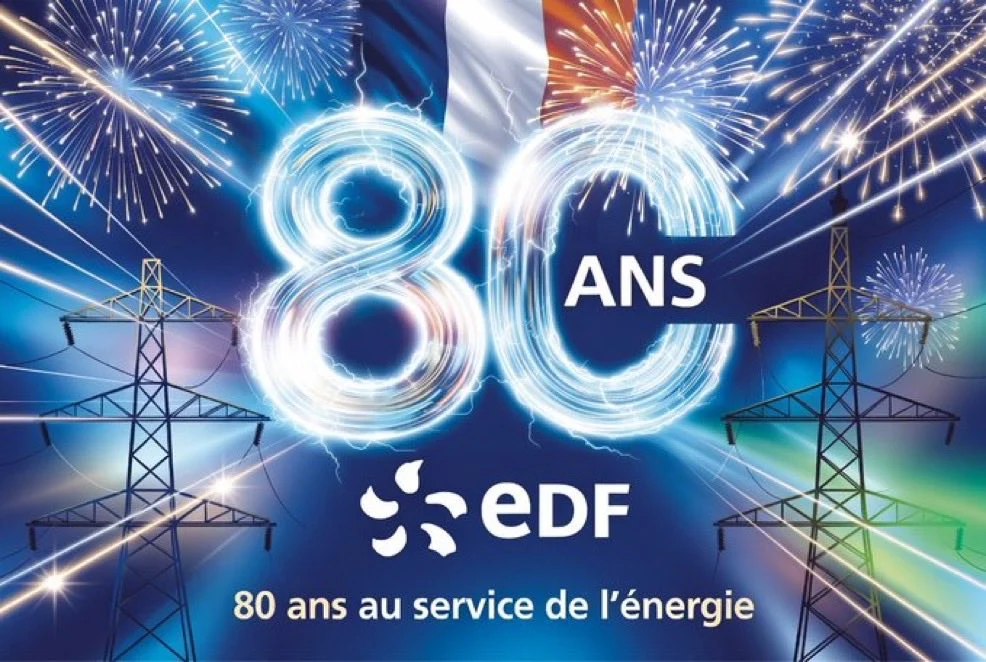

Publication sur X
8 avril 1946. Quatre-vingts ans de service public de l’électricité
Date de publication sur X · 17 avril 2026
Repères éditoriaux
La loi du 8 avril 1946 nationalise l’électricité et le gaz et crée EDF et GDF. Quatre-vingts ans plus tard, nous rappelions le rôle de Marcel Paul et défendions un service public de l’énergie accessible à toutes et tous.
Texte de la publication sur X
8 avril 1946 :
Marcel Paul nationalise l'électricité. Quatre-vingts ans.
Pas chère, partout, pour tous.
Quarante ans tenus.
Depuis vingt ans, démantèlement par morceaux. Facture doublée.
Ce que la Résistance a arraché, les actionnaires le revendent. https://t.co/5gGfbtWmXT

Sources
PCF 79 · @79Parti sur X · AR-0005-TW-2045108516247978072
À lire aussi · Présentation de la proposition de loi sur le service public de l’énergie · Le lien vidéo
Publications associées
- Marcel Paul, de la Résistance au service public de l’énergie · Même dossier sur la nationalisation de 1946
- Du service public de 1946 à la proposition d’un pôle public de l’énergie · Même dossier sur la nationalisation de 1946